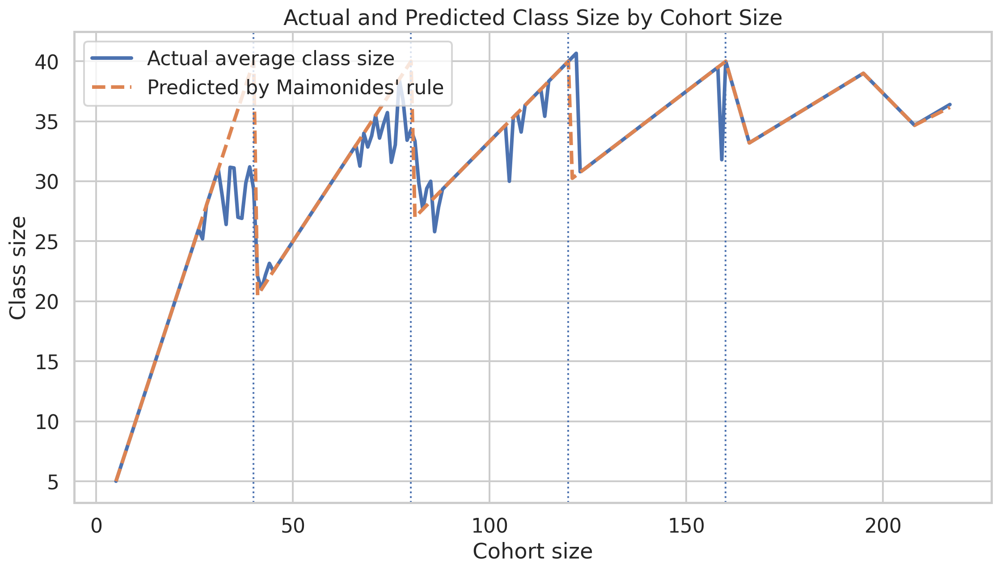
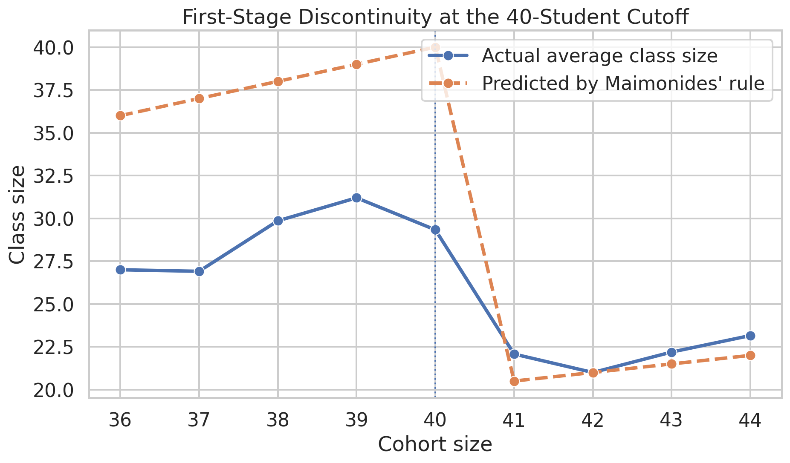

import pandas as pd
import numpy as np
from pathlib import Path
from linearmodels.iv import IV2SLS
import statsmodels.api as smReplication of Angrist and Lavy (1999)
USING MAIMONIDES’ RULE TO ESTIMATE THE EFFECT OF CLASS SIZE ON SCHOLASTIC ACHIEVEMENT*
Introduction
In Israel, schools followed Maimonides’ rule, which capped class size at 40 students. That creates sharp jumps in class size when enrollment crosses thresholds like 40 or 80. For example, 40 students can be taught in one class, but 41 students must be split into two smaller classes. Angrist and Lavy use this rule as an instrumental variable to study whether those changes in class sizes affect the achievement of students. The goal of this study is to estimate the causal effect of class size on students’ test scores, and not just identify a simple correlation.
The motivation for the design of this study is that earlier research on class size and difficult to interpret, because class size is often confounded with other factors like student disadvantage, remedial placement, and school quality. The authors want to move around that problem by exploiting the nonlinear pattern created by Maimonides’ rule.
Main Analysis
Load the fifth-grade sample
# Load in dataset
df5 = pd.read_stata(data_dir / "final5.dta")
# Quick inspection
print(f"Shape: {df5.shape}")
print(f"Column names: {df5.columns.tolist()}")
df5.head()Shape: (2029, 51)
Column names: ['schlcode', 'c_size', 'c_boys', 'c_girls', 'c_numcl', 'c_pik', 'c_status', 'c_leom', 'c_tip', 'c_num5rd', 'c_type', 'flgrm5', 'mrkgrm5', 'ngrm5', 'flmth5', 'mrkmth5', 'nmth5', 'towncode', 'townname', 'popcode', 'tip_a', 'grade', 'classid', 'classize', '_type_', '_freq_', 'cohsize', 'mathsize', 'avgmath', 'passmath', 'verbsize', 'avgverb', 'passverb', 'studchk', 'misskov2', 'missagg', 'nmiss_k', 'nmiss_a', 'classct', 'math_n', 'flmath_n', 'nmath_n', 'verb_n', 'flverb_n', 'nverb_n', 'impute', 'nverb_m', 'nmath_m', 'tip_s', 'townid', 'tipuach']| schlcode | c_size | c_boys | c_girls | c_numcl | c_pik | c_status | c_leom | c_tip | c_num5rd | ... | nmath_n | verb_n | flverb_n | nverb_n | impute | nverb_m | nmath_m | tip_s | townid | tipuach | |
|---|---|---|---|---|---|---|---|---|---|---|---|---|---|---|---|---|---|---|---|---|---|
| 0 | 11005 | 54 | 24 | 30 | 9 | 1 | 2 | 1 | 5 | 2 | ... | 55.0 | 72.744728 | 27.256363 | 55.0 | 0 | NaN | NaN | 24.0 | 26104.0 | 24 |
| 1 | 11005 | 54 | 24 | 30 | 9 | 1 | 2 | 1 | 5 | 2 | ... | 55.0 | 72.744728 | 27.256363 | 55.0 | 0 | NaN | NaN | 24.0 | 26104.0 | 24 |
| 2 | 11006 | 37 | 21 | 16 | 12 | 2 | 2 | 1 | 7 | 2 | ... | 15.0 | 75.470001 | 20.000000 | 15.0 | 0 | NaN | NaN | 38.0 | 26104.0 | 38 |
| 3 | 11006 | 37 | 21 | 16 | 12 | 2 | 2 | 1 | 7 | 2 | ... | 15.0 | 75.470001 | 20.000000 | 15.0 | 1 | 20.0 | 20.0 | 38.0 | 26104.0 | 38 |
| 4 | 11009 | 32 | 17 | 15 | 6 | 1 | 2 | 1 | 1 | 1 | ... | 32.0 | 73.970001 | 40.599998 | 32.0 | 0 | NaN | NaN | 6.0 | 4622.0 | 6 |
5 rows × 51 columns
I begin with the grade-specific Stata file rather than combining samples across grades. This matches the structure of the original study, which reports results separately for fourth and fifth graders. For the main replication, I start with final5.dta, since the paper’s strongest and most prominent findings are for fifth-grade outcomes, especially reading achievement.
Before estimating any models, I inspect the dataset to identify the variables corresponding to observed class size, enrollment, test scores, and the measure of student disadvantage. This step is important because even when working from the authors’ original files, variable names may be abbreviated or coded differently than the terminology used in the paper. Confirming these mappings up front makes the later replication steps easier to interpret and reduces the risk of specification errors.
Identify the core variables
# Keep the core variables for replication
g5 = df5[["classize", "cohsize", "avgverb", "avgmath", "tipuach", "schlcode"]].copy()
# Drop missing values in the main analysis variables
g5 = g5.dropna(subset=["classize", "cohsize", "avgverb", "avgmath", "tipuach"]).copy()
print(f"Shape: {g5.shape}")
g5.describe().TShape: (2024, 6)| count | mean | std | min | 25% | 50% | 75% | max | |
|---|---|---|---|---|---|---|---|---|
| classize | 2024.0 | 29.954545 | 6.600073 | 5.000000 | 26.000000 | 31.000000 | 35.000000 | 47.000000 |
| cohsize | 2024.0 | 74.223320 | 37.211710 | 5.000000 | 48.000000 | 69.000000 | 96.000000 | 217.000000 |
| avgverb | 2024.0 | 74.445480 | 8.077354 | 34.799999 | 69.857500 | 75.430000 | 79.847000 | 187.606003 |
| avgmath | 2024.0 | 67.323013 | 10.032691 | 0.000000 | 61.137501 | 67.799999 | 74.094997 | 181.246002 |
| tipuach | 2024.0 | 14.095356 | 13.492471 | 0.000000 | 4.000000 | 10.000000 | 19.250000 | 76.000000 |
| schlcode | 2024.0 | 39607.332016 | 15280.974897 | 11005.000000 | 31037.000000 | 41213.000000 | 51203.000000 | 61365.000000 |
Construct the Maimonides-rule instrument
The key source of identification in the paper is the class-size rule attributed to Maimonides, which caps classes at 40 students. This rule implies a nonlinear relationship between cohort enrollment and predicted class size. If a grade has \(e_s\) students enrolled, then the predicted class size is
\[ f_s = \frac{e_s}{\left\lfloor \frac{e_s - 1}{40} \right\rfloor + 1}. \]
This formula captures the fact that a cohort of up to 40 students can remain in one class, while a cohort of 41 students must be split into two classes. More generally, the denominator gives the number of classes implied by the 40-student cap. Following the paper, I use this rule-based predicted class size as an instrument for actual class size.
# Construct Maimonides' rule predicted class size
# f_sc = enrollment / ( floor((enrollment - 1)/40) + 1 )
g5["pred_class_size"] = g5["cohsize"] / (np.floor((g5["cohsize"] - 1) / 40) + 1)
g5[["cohsize", "pred_class_size", "classize"]].head(10)| cohsize | pred_class_size | classize | |
|---|---|---|---|
| 0 | 54 | 27.0 | 28 |
| 1 | 54 | 27.0 | 26 |
| 2 | 37 | 37.0 | 22 |
| 3 | 37 | 37.0 | 15 |
| 4 | 32 | 32.0 | 32 |
| 5 | 68 | 34.0 | 34 |
| 6 | 68 | 34.0 | 34 |
| 7 | 87 | 29.0 | 30 |
| 8 | 87 | 29.0 | 26 |
| 9 | 87 | 29.0 | 31 |
First-stage relationship
The first empirical step is to verify the relevance of the instrument. In a fuzzy regression discontinuity framework, crossing the enrollment thresholds does not perfectly determine actual class size, but it should still shift class size strongly and systematically. This is the first-stage relationship.
Formally, the first stage can be written as
\[ \text{classize}_{sc} = \pi_0 + \pi_1 f_s + \pi_2 \text{tipuach}_s + \pi_3 \text{cohsize}_s + u_{sc}, \]
where \(f_s\) is predicted class size from Maimonides’ rule. A strong negative or positive association between the instrument and observed class size is essential, because the IV estimates rely on this rule-based variation to identify the causal effect of class size.
# Quick first-stage check with OLS
X_fs = g5[["pred_class_size", "tipuach", "cohsize"]].copy()
X_fs = sm.add_constant(X_fs)
first_stage = sm.OLS(g5["classize"], X_fs).fit(cov_type="HC1")
print(first_stage.summary()) OLS Regression Results
==============================================================================
Dep. Variable: classize R-squared: 0.644
Model: OLS Adj. R-squared: 0.643
Method: Least Squares F-statistic: 1991.
Date: Tue, 21 Apr 2026 Prob (F-statistic): 0.00
Time: 16:28:13 Log-Likelihood: -5646.3
No. Observations: 2024 AIC: 1.130e+04
Df Residuals: 2020 BIC: 1.132e+04
Df Model: 3
Covariance Type: HC1
===================================================================================
coef std err z P>|z| [0.025 0.975]
-----------------------------------------------------------------------------------
const 7.4148 0.664 11.159 0.000 6.112 8.717
pred_class_size 0.6565 0.030 22.132 0.000 0.598 0.715
tipuach -0.0348 0.007 -4.774 0.000 -0.049 -0.021
cohsize 0.0392 0.004 9.520 0.000 0.031 0.047
==============================================================================
Omnibus: 727.891 Durbin-Watson: 1.421
Prob(Omnibus): 0.000 Jarque-Bera (JB): 6866.285
Skew: -1.417 Prob(JB): 0.00
Kurtosis: 11.566 Cond. No. 520.
==============================================================================
Notes:
[1] Standard Errors are heteroscedasticity robust (HC1)
NoteInterpretation of the first-stage results
The first-stage regression confirms that the Maimonides-rule instrument is highly relevant for explaining observed class size. The coefficient on pred_class_size is 0.6565 with a very small standard error, indicating a strong positive relationship between rule-predicted class size and actual class size. In other words, when the institutional rule predicts larger classes, schools do in fact tend to have larger observed classes.
Formally, the estimated first stage is
\[ \text{classize}_{sc} = \pi_0 + \pi_1 \text{pred\_class\_size}_{s} + \pi_2 \text{tipuach}_{s} + \pi_3 \text{cohsize}_{s} + u_{sc}, \]
with \(\hat{\pi}_1 = 0.6565\). This means that a one-student increase in predicted class size is associated with about a 0.66 student increase in actual class size, conditional on disadvantage and cohort size.
This is exactly what the replication needs at this stage: a strong first stage. Since the IV strategy relies on variation in actual class size generated by the rule of 40, the fact that the instrument enters so strongly supports the credibility of the 2SLS design.
Reduced-form relationship
After verifying that the instrument predicts actual class size, I estimate the reduced-form relationship between the rule-based instrument and student achievement. This asks whether the variation in class size induced by Maimonides’ rule is associated with systematic changes in test scores.
The reduced form is useful because it captures the total effect of the instrument on outcomes before dividing by the first-stage relationship. In notation, the reduced-form regression for reading is
\[ \text{avgverb}_{sc} = \rho_0 + \rho_1 f_s + \rho_2 \text{tipuach}_s + \rho_3 \text{cohsize}_s + \varepsilon_{sc}. \]
If smaller classes improve achievement, then the discontinuities induced by the rule should generate corresponding shifts in test performance.
# Reduced form: reading score on predicted class size + controls
X_rf = g5[["pred_class_size", "tipuach", "cohsize"]].copy()
X_rf = sm.add_constant(X_rf)
reduced_form = sm.OLS(g5["avgverb"], X_rf).fit(cov_type="HC1")
print(reduced_form.summary()) OLS Regression Results
==============================================================================
Dep. Variable: avgverb R-squared: 0.333
Model: OLS Adj. R-squared: 0.332
Method: Least Squares F-statistic: 249.2
Date: Tue, 21 Apr 2026 Prob (F-statistic): 1.34e-137
Time: 16:28:13 Log-Likelihood: -6690.2
No. Observations: 2024 AIC: 1.339e+04
Df Residuals: 2020 BIC: 1.341e+04
Df Model: 3
Covariance Type: HC1
===================================================================================
coef std err z P>|z| [0.025 0.975]
-----------------------------------------------------------------------------------
const 83.2212 0.832 100.019 0.000 81.590 84.852
pred_class_size -0.1524 0.031 -4.854 0.000 -0.214 -0.091
tipuach -0.3518 0.014 -25.521 0.000 -0.379 -0.325
cohsize 0.0115 0.005 2.371 0.018 0.002 0.021
==============================================================================
Omnibus: 1437.652 Durbin-Watson: 1.528
Prob(Omnibus): 0.000 Jarque-Bera (JB): 210326.812
Skew: 2.424 Prob(JB): 0.00
Kurtosis: 52.704 Cond. No. 520.
==============================================================================
Notes:
[1] Standard Errors are heteroscedasticity robust (HC1)
NoteInterpretation of the reduced-form results
The reduced-form regression shows that higher predicted class size is associated with lower fifth-grade reading performance. The coefficient on pred_class_size is -0.1524, implying that when the rule predicts larger classes, average verbal scores fall.
This relationship can be written as
\[ \text{avgverb}_{sc} = \rho_0 + \rho_1 \text{pred\_class\_size}_{s} + \rho_2 \text{tipuach}_{s} + \rho_3 \text{cohsize}_{s} + \varepsilon_{sc}, \]
with \(\hat{\rho}_1 = -0.1524\). The negative sign is consistent with the paper’s main intuition: the enrollment cutoffs created by Maimonides’ rule shift class size in a way that also shifts student achievement.
Essentially, the reduced form is useful because it shows that the instrument matters not only for treatment assignment, but also for outcomes. This is the key connection between the first stage and the IV estimate. The negative reduced-form coefficient already suggests that smaller classes improve reading scores in the fifth-grade sample.
Estimate the main 2SLS specification
Next, I will estimate the main instrumental variables model, using predicted class size from Maimonides’ rule as an instrument for observed class size. This is the central replication step because it corresponds directly to the paper’s main causal claim.
The second-stage equation can be written as
\[ \text{avgverb}_{sc} = \beta_0 + \beta_1 \text{classize}_{sc} + \beta_2 \text{tipuach}_s + \beta_3 \text{cohsize}_s + \eta_{sc}, \]
where classize is treated as endogenous and instrumented with \(f_s\). The coefficient of interest is \(\beta_1\). A negative estimate implies that reducing class size increases average verbal achievement, which is the core finding reported in the paper for fifth graders.
# Main 2SLS specification: fifth-grade reading
iv_reading = IV2SLS.from_formula(
"avgverb ~ 1 + tipuach + cohsize + [classize ~ pred_class_size]",
data=g5
).fit(cov_type="robust")
print(iv_reading.summary) IV-2SLS Estimation Summary
==============================================================================
Dep. Variable: avgverb R-squared: 0.3084
Estimator: IV-2SLS Adj. R-squared: 0.3074
No. Observations: 2024 F-statistic: 699.67
Date: Tue, Apr 21 2026 P-value (F-stat) 0.0000
Time: 16:28:13 Distribution: chi2(3)
Cov. Estimator: robust
Parameter Estimates
==============================================================================
Parameter Std. Err. T-stat P-value Lower CI Upper CI
------------------------------------------------------------------------------
Intercept 84.942 1.2156 69.878 0.0000 82.560 87.325
tipuach -0.3599 0.0143 -25.202 0.0000 -0.3878 -0.3319
cohsize 0.0206 0.0065 3.1739 0.0015 0.0079 0.0333
classize -0.2321 0.0503 -4.6141 0.0000 -0.3307 -0.1335
==============================================================================
Endogenous: classize
Instruments: pred_class_size
Robust Covariance (Heteroskedastic)
Debiased: False
NoteInterpretation of the main 2SLS result for fifth-grade reading
The main IV estimate implies a statistically significant negative effect of class size on fifth-grade reading achievement. The coefficient on classize is -0.2321, which means that increasing class size by one student lowers the average verbal score by about 0.23 points, holding disadvantage and cohort size constant.
The second-stage equation is
\[ \text{avgverb}_{sc} = \beta_0 + \beta_1 \text{classize}_{sc} + \beta_2 \text{tipuach}_{s} + \beta_3 \text{cohsize}_{s} + \eta_{sc}, \]
where classize is instrumented using pred_class_size. The estimate \(\hat{\beta}_1 = -0.2321\) is close to the values reported in Angrist and Lavy for fifth-grade reading, where their preferred specifications are generally in the range of roughly \(-0.16\) to \(-0.28\).
This is therefore a successful replication of one of the paper’s central findings. The sign, magnitude, and statistical significance all line up with the published result: smaller classes lead to higher reading achievement for fifth graders.
Add a quadratic control for enrollment
One concern in this design is that cohort enrollment may affect test scores through channels other than class size. To address this, the paper considers specifications that include increasingly flexible controls for enrollment. I begin with a quadratic specification by adding \(\text{cohsize}^2 / 100\) to the model.
The motivation is that the identifying assumption is not that enrollment is random, but rather that any non-class-size effects of enrollment are smooth. The discontinuities generated by the rule then provide the source of exogenous variation. The corresponding specification becomes
\[ \text{avgverb}_{sc} = \beta_0 + \beta_1 \text{classize}_{sc} + \beta_2 \text{tipuach}_s + \beta_3 \text{cohsize}_s + \beta_4 \frac{\text{cohsize}_s^2}{100} + \eta_{sc}. \]
This helps check whether the estimated class-size effect is robust to a more flexible control for enrollment.
# 2SLS with quadratic enrollment control
g5["cohsize_sq_100"] = (g5["cohsize"] ** 2) / 100
iv_reading_quad = IV2SLS.from_formula(
"avgverb ~ 1 + tipuach + cohsize + cohsize_sq_100 + [classize ~ pred_class_size]",
data=g5
).fit(cov_type="robust")
print(iv_reading_quad.summary) IV-2SLS Estimation Summary
==============================================================================
Dep. Variable: avgverb R-squared: 0.3084
Estimator: IV-2SLS Adj. R-squared: 0.3070
No. Observations: 2024 F-statistic: 699.71
Date: Tue, Apr 21 2026 P-value (F-stat) 0.0000
Time: 16:28:13 Distribution: chi2(4)
Cov. Estimator: robust
Parameter Estimates
==================================================================================
Parameter Std. Err. T-stat P-value Lower CI Upper CI
----------------------------------------------------------------------------------
Intercept 84.940 1.2243 69.376 0.0000 82.540 87.340
tipuach -0.3599 0.0143 -25.133 0.0000 -0.3879 -0.3318
cohsize 0.0207 0.0063 3.2886 0.0010 0.0083 0.0330
cohsize_sq_100 -7.102e-05 0.0018 -0.0401 0.9681 -0.0035 0.0034
classize -0.2320 0.0507 -4.5738 0.0000 -0.3315 -0.1326
==================================================================================
Endogenous: classize
Instruments: pred_class_size
Robust Covariance (Heteroskedastic)
Debiased: False
NoteInterpretation of the 2SLS result with quadratic enrollment controls
Adding a quadratic term in cohort size leaves the estimated class-size effect essentially unchanged. The coefficient on classize is -0.2320, compared with -0.2321 in the linear specification. The coefficient on the quadratic term itself is extremely small and statistically insignificant.
This specification is helpful because one concern in regression discontinuity or IV designs based on enrollment is that cohort size may affect outcomes through nonlinear channels unrelated to class size. By estimating
\[ \text{avgverb}_{sc} = \beta_0 + \beta_1 \text{classize}_{sc} + \beta_2 \text{tipuach}_{s} + \beta_3 \text{cohsize}_{s} + \beta_4 \frac{\text{cohsize}_{s}^{2}}{100} + \eta_{sc}, \]
I allow for a more flexible smooth relationship between enrollment and achievement.
The fact that the estimated effect of class size is virtually identical across the linear and quadratic specifications suggests that the result is not being driven by a misspecified control for cohort size. This strengthens the interpretation that the discontinuous variation induced by Maimonides’ rule is identifying a genuine causal effect.
Compare reading and math outcomes
After estimating the model for verbal achievement, I repeat the same 2SLS procedure using average math scores as the dependent variable. This comparison is useful because the paper reports stronger and more consistent evidence for some outcomes than for others. Replicating both outcomes helps determine whether the data reproduce the same qualitative pattern.
Using the same instrument and control set also makes the comparison clean: any difference in results between reading and math reflects differences in how class size affects those outcomes, rather than differences in specification.
# 2SLS for math, if you want to compare to the paper
iv_math = IV2SLS.from_formula(
"avgmath ~ 1 + tipuach + cohsize + [classize ~ pred_class_size]",
data=g5
).fit(cov_type="robust")
print(iv_math.summary) IV-2SLS Estimation Summary
==============================================================================
Dep. Variable: avgmath R-squared: 0.2130
Estimator: IV-2SLS Adj. R-squared: 0.2118
No. Observations: 2024 F-statistic: 538.28
Date: Tue, Apr 21 2026 P-value (F-stat) 0.0000
Time: 16:28:14 Distribution: chi2(3)
Cov. Estimator: robust
Parameter Estimates
==============================================================================
Parameter Std. Err. T-stat P-value Lower CI Upper CI
------------------------------------------------------------------------------
Intercept 74.123 1.7002 43.595 0.0000 70.790 77.455
tipuach -0.3344 0.0179 -18.706 0.0000 -0.3694 -0.2993
cohsize 0.0392 0.0082 4.7814 0.0000 0.0231 0.0552
classize -0.1667 0.0660 -2.5269 0.0115 -0.2960 -0.0374
==============================================================================
Endogenous: classize
Instruments: pred_class_size
Robust Covariance (Heteroskedastic)
Debiased: False
NoteInterpretation of the 2SLS result for fifth-grade math
The IV estimate for math is also negative and statistically significant. The coefficient on classize is -0.1667, implying that an increase of one student in class size lowers average math scores by about 0.17 points.
This result is somewhat smaller in magnitude than the corresponding reading estimate, but it points in the same direction. In practical terms, both outcomes suggest that smaller classes improve student performance, with the effect appearing somewhat stronger for reading than for math in this sample.
This pattern also aligns well with the paper. Angrist and Lavy find especially clear evidence for fifth graders, and the math results become more negative once enrollment controls are included. My replication therefore supports the same conclusion: the institutional variation generated by the rule of 40 implies that smaller fifth-grade classes improve achievement.
Restrict to the discontinuity sample
To move closer to a local regression discontinuity interpretation, I restrict the sample to schools with enrollment close to the key cutoffs. Following the paper, this discontinuity sample includes observations with cohort enrollment in the intervals \([36,45]\), \([76,85]\), and \([116,125]\).
The logic is that observations near the thresholds are more comparable, while still preserving the discontinuous jumps in predicted class size induced by the rule. This sample restriction emphasizes the quasi-experimental variation at the cutoffs and reduces reliance on functional-form assumptions away from the discontinuities.
# Discontinuity sample used in the paper:
# cohsize in [36,45], [76,85], [116,125]
g5_disc = g5[
g5["cohsize"].between(36, 45) |
g5["cohsize"].between(76, 85) |
g5["cohsize"].between(116, 125)
].copy()
print(g5_disc.shape)(431, 8)# 2SLS in discontinuity sample
iv_reading_disc = IV2SLS.from_formula(
"avgverb ~ 1 + tipuach + cohsize + [classize ~ pred_class_size]",
data=g5_disc
).fit(cov_type="robust")
print(iv_reading_disc.summary) IV-2SLS Estimation Summary
==============================================================================
Dep. Variable: avgverb R-squared: 0.3013
Estimator: IV-2SLS Adj. R-squared: 0.2964
No. Observations: 431 F-statistic: 182.55
Date: Tue, Apr 21 2026 P-value (F-stat) 0.0000
Time: 16:28:14 Distribution: chi2(3)
Cov. Estimator: robust
Parameter Estimates
==============================================================================
Parameter Std. Err. T-stat P-value Lower CI Upper CI
------------------------------------------------------------------------------
Intercept 89.090 2.6888 33.133 0.0000 83.820 94.360
tipuach -0.4183 0.0337 -12.420 0.0000 -0.4843 -0.3523
cohsize 0.0798 0.0229 3.4856 0.0005 0.0349 0.1246
classize -0.4749 0.1219 -3.8940 0.0001 -0.7139 -0.2359
==============================================================================
Endogenous: classize
Instruments: pred_class_size
Robust Covariance (Heteroskedastic)
Debiased: False
NoteInterpretation of the discontinuity-sample estimate
Restricting the sample to cohorts near the enrollment cutoffs produces a larger negative estimate of the class-size effect. In the discontinuity sample, the coefficient on classize is -0.4749, which is roughly twice as large as the estimate in the full sample.
This is important because the discontinuity sample is closer to the spirit of a local fuzzy regression discontinuity design. By focusing on observations with cohort size in the ranges \([36,45]\), \([76,85]\), and \([116,125]\), the analysis places more weight on schools that are close to the thresholds where predicted class size jumps.
The larger coefficient suggests that the causal effect may be strongest in the local neighborhood around the cutoffs, which is exactly where the identifying variation is cleanest. At the same time, this estimate is less precise than the full-sample result, which is expected given the much smaller number of observations. Still, the sign and significance remain consistent with the paper’s main conclusion: smaller classes raise fifth-grade reading scores.
Cluster standard errors at the school level
The unit of observation in the replication is the class, but classes within the same school may share unobserved characteristics. This means that the residuals may be correlated within schools, which would make conventional heteroskedasticity-robust standard errors too small.
To address this, I cluster standard errors at the school level using schlcode. This follows the logic of the original paper, which adjusts inference for within-school correlation between classes. In practice, this affects precision more than point estimates, but it is important for making the replication comparable to the published results.
iv_reading_clustered = IV2SLS.from_formula(
"avgverb ~ 1 + tipuach + cohsize + [classize ~ pred_class_size]",
data=g5
).fit(cov_type="clustered", clusters=g5["schlcode"])
print(iv_reading_clustered.summary) IV-2SLS Estimation Summary
==============================================================================
Dep. Variable: avgverb R-squared: 0.3084
Estimator: IV-2SLS Adj. R-squared: 0.3074
No. Observations: 2024 F-statistic: 550.45
Date: Tue, Apr 21 2026 P-value (F-stat) 0.0000
Time: 16:28:14 Distribution: chi2(3)
Cov. Estimator: clustered
Parameter Estimates
==============================================================================
Parameter Std. Err. T-stat P-value Lower CI Upper CI
------------------------------------------------------------------------------
Intercept 84.942 1.4543 58.406 0.0000 82.092 87.793
tipuach -0.3599 0.0161 -22.295 0.0000 -0.3915 -0.3282
cohsize 0.0206 0.0084 2.4663 0.0137 0.0042 0.0370
classize -0.2321 0.0610 -3.8065 0.0001 -0.3516 -0.1126
==============================================================================
Endogenous: classize
Instruments: pred_class_size
Clustered Covariance (One-Way)
Debiased: False
Num Clusters: 1003
NoteInterpretation of the clustered-standard-error specification
When I cluster standard errors at the school level, the estimated effect of class size on reading remains negative and statistically significant. The coefficient on classize is still -0.2321, while the standard error increases from about 0.050 to about 0.061.
This is exactly what one would expect. Clustering changes the precision of the estimate, not the coefficient itself, because it adjusts for correlation in the error terms across classes within the same school. Since schools may share common resources, administrators, or student composition across classes, clustering is an appropriate correction in this setting.
The key takeaway is that the substantive result survives this more conservative inference procedure. Even after allowing for within-school dependence, the estimate remains statistically significant and economically meaningful. This makes the replication more comparable to the original paper, which also adjusts standard errors for within-school correlation.
Additional Analysis: Visualizing the Identification Strategy
As an additional exercise, I will supplement the regression results with a graphical representation of the paper’s identification strategy. Angrist and Lavy’s design relies on the fact that Maimonides’ rule creates discontinuous changes in predicted class size at enrollment thresholds of \(40\), \(80\), \(120\), and so on. If this rule is genuinely generating exogenous variation in class size, then the first-stage relationship should be visible in the data: observed class size should move with the nonlinear pattern implied by the rule.
I will plot cohort size against both actual class size and predicted class size from Maimonides’ rule. I will also plot average verbal scores against cohort size using binned averages. These figures make the causal logic of the paper easier to see. The first graph shows the treatment variation induced by the rule, while the second graph shows that achievement moves in a way consistent with smaller classes improving outcomes.

NoteInterpretation of full first-stage graph
The full-sample graph shows the characteristic sawtooth pattern of the rule. More importantly, the observed average class size follows the same general shape, even though it does not match the rule perfectly. This visual evidence is consistent with the first-stage regression, where predicted class size strongly explains actual class size.

NoteInterpretation of the zoomed discontinuity graph
The zoomed graph around the 40-student cutoff makes the identifying variation especially clear. As cohort size increases from 36 to 40, predicted class size rises from about 36 to 40 students. Once enrollment crosses from 40 to 41, predicted class size drops sharply to about 20.5 because the cohort is split into two classes:
\[ f_s = \frac{e_s}{\left\lfloor \frac{e_s - 1}{40} \right\rfloor + 1}. \]
Observed class size also falls discretely at this cutoff, though not by exactly the same amount. This is why the design is best understood as a fuzzy regression discontinuity: the institutional rule creates a discontinuous change in expected class size, and actual class size responds strongly but not perfectly.
Why this strengthens the causal interpretation
These graphs strengthen the causal interpretation of the paper’s estimates because they show that the source of variation is generated by an administrative rule rather than by ordinary differences across schools. Schools just below and just above a cutoff are likely to be similar in many ways, but they face different predicted class sizes because of the rule. The resulting discontinuity in actual class size is what allows the authors to isolate plausibly exogenous variation in treatment.
In this sense, the figures complement the 2SLS estimates by showing the logic of the design directly. The rule creates sharp nonlinearities in class size, and those nonlinearities provide the basis for causal inference.